This page brings together basic information about the Sinhala script and its use for the Sinhalese language. It aims to provide a brief, descriptive summary of the modern, printed orthography and typographic features, and to advise how to write Sinhalese using Unicode.
The Sinhala script is an abugida, ie. consonants carry an inherent vowel sound that is overridden using vowel signs. See the table to the right for a brief overview of features for the modern Sinhala orthography.
Sinhala is a diglossic language, that is, the spoken and written forms of the language show considerable variation.
Words are separated by spaces, and text runs horizontally, from left to right.
Sinhalese is also often considered two alphabets, or an alphabet within an alphabet, due to the presence of two sets of letters within the Unicode block. The core set, known as the śuddha siṃhala (pure Sinhalese, ශුද්ධ සිංහල) or eḷu hōḍiya (Eḷu alphabet එළු හෝඩිය), can represent all native phonemes, and is taught in schools. In order to accurately transcribe Sanskrit, Pali, Hindi and English loanwords, an extended set, the miśra siṃhala (mixed Sinhalese, මිශ්ර සිංහල), is available.
The eḷu hōḍiya system contains consonant and vowel letters and can be used to represent the sounds of the spoken language almost perfectly. The miśra hōḍiya set contains additional consonant letters, many of which are aspirated equivalents of existing letters (but which are pronounced in the same way as the unaspirated ones).
Unusually for indic scripts, there is a set of prenasalised consonants, and there is also an extra æ vowel.
The virama is usually visible in consonant clusters, like in Tamil. However, it is also possible to render clusters using conjunct forms (ligatures or reduced glyphs), especially for clusters involving r or j. A zero width joiner is used after the virama to signal the intention for that. Putting the ZWJ before the virama produces another form of conjunct, where adjacent consonants touch each other, but this is not used for modern Sinhalese.
One particular affix, යිyi, is pronounced j and treated as a final consonant.
This orthography is an abugida with an inherent vowel, that is pronounced a in stressed syllables and ə in unstressed. Other post-consonant vowels and 2 diphthongs are written using vowel signs, all combining marks.
The inherent vowel is typically transcribed as a, and pronounced a in stressed syllables, and otherwise ə.wl,#Phonology So ka is written by simply using the consonant letter. The following example shows inherent vowels.
ටකනවා
ට␣ක␣න␣ව␣ා
Inherent vowel suppression
්
0DCA is attached to a consonant to indicate that the inherent vowel is not pronounced. It has 2 different shapes, depending on which base consonant it is attached to.
The two different shapes of AL-LAKUNA. Combined with shuddhak on the left, and mishrak on the right.
Consonants without a following vowel typically occur at the end of a word, or as part of a consonant cluster or geminate (see clusters), and a vowel killer is typically used whenever the inherent vowel is absent, eg.
අලුත්
ඇතැම්
කන්ද
Post-consonant vowels
Post-consonant vowels and 2 diphthongs are written using 13 vowel signs, all combining marks. There are 2 pre-base vowels, and 4 circumgraphs, and no multipart vowels in principle, however several vowel signs decompose to more than one character.
Nine vowel signs are spacing marks, meaning that they consume horizontal space when added to a base consonant.
All vowel signs are stored after the base consonant, and the rendering process puts them in the correct place for display. Conjuncts are treated as indivisible units when it comes to rendering vowel signs, meaning that pre-base vowel signs and left-side glyphs of circumgraphs are rendered before the conjunct as a whole (see prebase).
The shapes of vowel signs can vary significantly, depending on what they combine with. For details, see context.
The vowel letters of Sinhala are divided into a core set and an extended set. The core śuddha (ʃuddʰa) alphabet covers the sounds of modern spoken Sinhala. The extended miśra (miʃra) letters and vocalics are used for writing Sanskrit, Pali, and Tamil words.
Sinhala uses the following dedicated combining marks for ʃuddʰa vowels. (The miśra vowel signs are the diphthongs in the next subsection.)
ි␣ී␣ු␣ූ␣ෙ␣ේ␣ො␣ෝ␣ැ␣ෑ␣ා
It is worth noting that Sinhala has vowel signs for the sounds æ and æː, which is unusual for the major scripts in this region, eg.
Sinhala uses the following dedicated combining marks for diphthongs. These are extended (miʃra) letters which, with vocalics, are used for writing Sanskrit, Pali, and Tamil words.
ෛ␣ෞ
Examples:
තෛලය
ගෞරවය
Pre-base vowel signs
ෙ␣ ␣ෛ
Two vowel signs appear to the left of the base consonant letter or cluster when rendered. The first of these is a core letter, the second an extended letter, eg.
බෙක
වෛද්ය
These are combining marks that are always typed and stored after the base consonant(s), ie. the codepoints follow the order in which the items are pronounced. The rendering process places the glyph before the base consonant without changing the code points. The following shows the sequence of code points that make up the first word just above.
බ␣ෙ␣ක
Because modern Sinhala usually indicates consonant clusters with a visible virama, pre-base vowel signs normally appear before the consonant that immediately precedes them audially (see fig_prebase.
එක්වෙනවා
එ␣ක␣්␣ව␣ෙ␣න␣ව␣ා
However, when the consonant cluster is rendered as a conjunct, the vowel sign is actually rendered before the start of the conjunct, ie. the sequence of glyphs for the orthographic syllable is rendered VCC, whereas the pronunciation is CCV.
A prebase vowel, rendered to the left of the consonant after which it is pronounced.show composition
පළවෙනි
Circumgraphs
ේ␣ො␣ෝ␣ ␣ෞ
Four vowels are produced by a single combining character with visually separate parts that appear on different (mostly opposite) sides of the consonant onset. These are all core letters, except for the diphthong. Examples:
මේද
දොළ
නෝනා
ගෞරවය
Like pre-base glyphs, these are combining marks that are always typed and stored after the base consonant or consonant cluster. The rendering process places the glyphs around the base consonant(s), as needed, eg.
කොර
ක␣ො␣ර
Again, like pre-base vowel signs, in Sinhala consonant clusters the circumgraph normally surrounds only the consonant that phonetically precedes it. In the cases where it is pronounced after a cluster that is rendered as a conjunct, it surrounds the whole conjunct.
ප්රේත
ප␣්␣ර␣ේ␣ත
ප්රේමය
ප␣්␣␣ර␣ේ␣ම␣ය
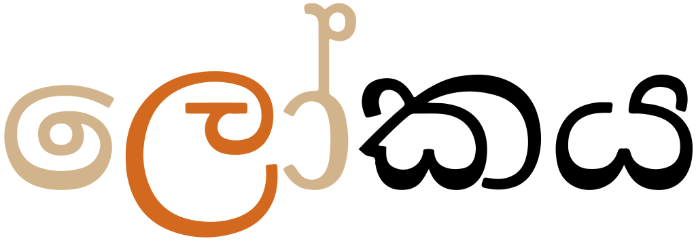
A circumgraph vowel: a single code point with glyphs on both sides of the consonant after which it is pronounced.show composition
ලෝකය
All of these circumgraphs can be written as a single code points, or as multiple code points. See encoding.
Multipart vowels
Multipart vowels only occur in Sinhalese decomposed text. Usually there are no multipart vowels.
The following are the vowel signs that decompose in NFD and recompose under NFC, shown here as decomposed sequences.
ේ␣ො␣ෝ␣ෞ
Vowel sign placement
The following list shows where vowel signs are positioned around a base consonant to produce vowels, and how many instances of that pattern there are.
2 pre-base, eg. කෙke
3 post-base, eg. කැkæ
2 superscript, eg. කිki
2 subscript, eg. කුku
3 pre+post-base, eg. කොko
1 pre+superscript, eg. කේkē
Standalone vowels
Sinhala represents standalone vowels using a set of independent vowel letters. The set includes a character to represent the inherent vowel sound.
The core (ʃuddʰa) alphabet includes the following.
ඉ␣ඊ␣උ␣ඌ␣එ␣ඒ␣ඔ␣ඕ␣ඇ␣ඈ␣අ␣ආ
The extended (miʃra) letters are as follows, but see also vocalics:
ඓ␣ඖ
Examples:
අකුර
ඉරු
ඊයේ
එකතු
The pronunciations of අ and ආ vary, but in a fairly predictable way. The former is a in the first syllable, except for a few words, and before double consonants or clusters, and ə word finally and before single consonants. The latter represents aː everywhere except word-finally, where it may be a, depending on the word structure. Similar length rules apply to e and o in final position.
Vowel sounds to characters
This section maps Sinhala vowel sounds to common graphemes in the Sinhala orthography.
Graphemes are labelled as either dependent (post-consonant) or standalone consonants.
Plain vowels
i
dependentි
standaloneඉ
iː
dependentී
standaloneඊ
u
dependentු
standaloneඋ
uː
dependentූ
standaloneඌ
e
dependentෙ
standaloneඑ
eː
dependentේ
standaloneඒ
o
dependentො
standaloneඔ
oː
dependentෝ
standaloneඕ
ə
inherent voweleg. අගය
æ
dependentැ
standaloneඇ
æː
dependentෑ
standaloneඈ
a
standaloneඅ
aː
dependentා
standaloneආ
Complex vowels
ɑj
dependentෛ
standaloneඓ
ɑw
dependentෞ
standaloneඖ
Vocalics
These are all classed as extended (miʃra) letters. Most are no longer in contemporary use.
ඍ␣ෘ
Example:
කෘෂ්ණ
ඎ␣ඏ␣ඐ␣ෲ␣ෟ␣ෳ
Consonants
Consonant summary table
This table summarises only basic consonant to character assignments. Click on the phonetic transcriptions for more detail.
The core set, or ʃuddʰa hōɖiya, is based on the classical grammar of the middle ages (called එළු හෝඩියẹɭu hōɖiya) and contains the following consonants. They are highly phonetic.
Click on each letter for examples of usage.
ප␣බ␣ත␣ද␣ට␣ඩ␣ක␣ග␣ච␣ජ␣ස␣හ␣ම␣ණ␣ව␣ර␣ල␣ළ␣ය
Some argue that ච doesn't belong in this group for academic reasons, but it is certainly one of the basic sounds of modern Sinhala.
Prenasalised consonants
ඹ␣ඳ␣ඬ␣ඟ
A peculiarity of Sinhalese among indic scripts is the inclusion of prenasalised consonants, representing a nasal sound followed by a stop. The orthography distinguishes these graphemes from the more straightforward nasal consonant followed by a stop. For example, compare අණ්ඩඅඬ
The prenasalised shapes are formed from a combination of the shapes of the participating characters.
The Sinhala block includes another, archaic pre-nasalised consonant, ඦ, ᶮd͡ʒ, which is only attested in a few words.
miʃra & other consonants
The full set of consonants includes the additional consonants in this section, known as miʃra hōɖiya (mixed alphabet).
ඵ␣භ␣ථ␣ධ␣ඨ␣ඪ␣ඛ␣ඝ␣ඡ␣ඣ␣ඥ␣ෆ␣ශ␣ෂ␣න␣ඤ␣ඞ
The miʃra stops are mapped to aspirated consonants in Sanskrit and Pali, but they are pronounced in modern Sinhala in the same way as the unaspirated ʃuddʰa ones.
This list includes a new character for f, ෆ. Sometimes, instead, a character is used that combines the Latin letter 'f' with the Sinhalese පd. That letter doesn't appear to be encoded in Unicode.
ඥ is an atomic character representing the conjunct JA + NYA.
Onsets
Clusters of consonant letters at the beginning of an orthographic syllable occur in Sinhala, and they are handled as described in the section clusters.
Finals
Syllable codas are written using ordinary characters, on the whole, followed by a virama or a conjunct sequence. The -r coda has a slight difference, and there are 2 combining marks.
RA coda
Mechanically, the -r syllable coda is handled in the same way as other codas, but the glyph position in a conjunct is slightly different. It is represented by a special glyph above the full-sized glyph for the following consonant. For example:
අර්තාපල්
අ␣ර␣්␣␣ත␣ා␣ප␣ල␣්
Combining marks
Two combining characters are used to represent syllable-final consonant sounds.
ං␣ඃ
0D82 usually represents the sound ŋ, eg. සිංහල
0D83 is also in the repertoire. Not clear how it's used in Sinhala.
Either of these 'semi-consonants' must be used after a vowel or after a consonant+vowel (including the inherent vowel), and must be the last combining character in the syllable.
Consonant clusters
Consonant cluster handling is a little unusual in Sinhala, compared to other indic scripts.
There are 3 ways of managing consonant clusters. Modern Sinhala uses only the first two alternatives.
Visible virama : Show 0DCA over the first character in the cluster. Unlike Devanagari, this is the default for Sinhala.
Conjunct forms : Use a reduced or ligated form, especially for r or y. Since the approach changes the shape of the constituent components, the cluster is referred to as a conjunct.
Touching consonants : Make the consonants touch (not used in modern Sinhala).
The virama indicates that a consonant has no vowel (see novowel). The shape of the virama can take two forms, depending on the base character it is appended to: with k you get ක්; with kh you get ඛ්, eg.
ලක්ෂය
ල␣ක␣්␣ෂ␣ය
අම්මා
අ␣ම␣්␣ම␣ා
If a pre-base vowel sign is added after the last consonant in a cluster, it will appear immediately to the left of that consonant, rather than before the first consonant in the cluster, eg. see how the vowel in fig_kko cuts between the two consonants in the cluster.
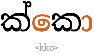
The pre-base part of the vowel (highighted) appears immediately before the consonant after which it is pronounced, rather than at the beginning of the consonant cluster.
Conjuncts
The combination 0DCA 200D causes the font to hide the virama glyph and form a conjunct, eg.
ව්යාඝ්රයා
ව␣්␣␣ය␣ා␣ඝ␣්␣␣ර␣ය␣ා
This approach is principally used when combining r or y with another consonant (both before and after, in the case of r), and produces a reduced or ligated form.
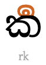
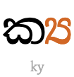
Common conjuncts in Sinhala.
When a u or uː vowel appears below a conjoined conjunct, it is placed below the final consonant, eg.
ක්යුkju
Although the use of the conjunct with r is required in normal Sinhalese text, it is possible to not use it: both of the following are valid ways to write karma.s
කර්ම
ක␣ර␣්␣ම
කර්ම
ක␣ර␣්␣␣ම
Show more conjuncts
Wikipedia lists several more conjuncts, some of which are reproduced below. The availability of these conjuncts is font dependent, eg. ඳ්වⁿd͓₊v doesn't ligate using the default font of this page, but may with another.
ක්ව␣ක්ෂ␣ත්ථ␣ත්ව␣න්ද␣න්ධ␣න්ද්ර
Touching consonants
The third approach is used in ancient scriptures but is not used in modern Sinhala.ws It hides the virama and moves the consonants alongside each other, so that they are touching, eg. මම becomes ම්මmm
For this use ZWJ first, ie. 200D 0DCA.
Consonant length
Gemination and consonant lengthening are handled using the normal approach to consonant clusters (see clusters), eg.
අවුරුද්ද
කුරුල්ලා
Consonant sounds to characters
This section maps Sinhala consonant sounds to common graphemes in the Sinhala orthography.
Graphemes are labelled as either śuddha or miśra consonants.
p
śuddhaප
miśraඵ
b
śuddhaබ
miśraභ
ᵐb
śuddhaඹ
t
śuddhaත
miśraථ
t͡ʃ
śuddhaච
miśraඡ
d
śuddhaද
miśraධ
ⁿd
śuddhaඳ
d͡ʒ
śuddhaජ
miśraඣ
ᶮd͡ʒ
miśraඦ
ʈ
śuddhaට
miśraඨ
ɖ
śuddhaඩ
miśraඪ
ⁿɖ
śuddhaඬ
k
śuddhaක
miśraඛ
ɡ
śuddhaග
miśraඝ
ᵑɡ
śuddhaඟ
f
miśraෆ
s
śuddhaස
ʃ
miśraශ
miśraෂ
ɦ
śuddhaහ
m
śuddhaම
m̃
codaංCoda.
n
śuddhaණ
miśraන
ɲ
miśraඥ
miśraඤ
ŋ
miśraඞ
codaංCoda.
d͡ʒɲ
miśraඞFor Sanskrit, Pali, etc.
ɡn
miśraඞWhen not word-initial.
ʋ
śuddhaව
r
śuddhaර
ri
miśraෘ
miśraඍ
ru
miśraෘ
miśraඍ
l
śuddhaල
ɭ
śuddhaළ
li
miśraෟ
j
śuddhaය
Encoding choices
Canonical equivalence
All of these circumgraphs can be written as a single code points, or as multiple code points.
0DDA 0DD9 0DCA
0DDC 0DD9 0DCF
0DDD 0DD9 0DCF 0DCA
0DDE 0DD9 0DDF
The single code point per vowel sign is the form preferred by the Sinhala encoding standards and the form in common use for Sinhala. The parts are separated, however, in Unicode when normalised using Normalisation Form D (NFD). If Normalisation Form C (NFC) is applied, they recompose.
Whichever approach is used, the vowel signs must be typed and stored after the consonant characters they surround. In the case of decomposed vowel signs, the order is also important and must be as shown above.
Non-equivalences
It is possible to visually analyse the atomic letters below as being composed of sub-parts, but the Unicode Standard strongly recommends that they should each be written with one of the single code points listed here. Those code points do not decompose in NFD.
Use
Do not use!
0D86
0D85 0DCF
0D87
0D85 0DD0
0D88
0D85 0DD1
0D8C
0D8B 0DDF
0D8E
0D8D 0DD8
0D90
0D8F 0DDF
0D92
0D91 0DCA
0D93
0D91 0DD9
0D96
0D94 0DDF
Numbers, dates, currency, etc.
Sinhala uses european digits.
There is, however, a set of native digits, that were used into the 20th century, but mostly associated with horoscopes. The shapes of some of these are identical to characters used for other purposes.
෦␣෧␣෨␣෩␣෪␣෫␣෬␣෭␣෮␣෯
There is also another, older set that were used in an archaic number system, called Sinhala Illakkam, prior to 1815. These are all in the Sinhala Archaic Numbers block.
𑇡␣𑇢␣𑇣␣𑇤␣𑇥␣𑇦␣𑇧␣𑇨␣𑇩␣𑇪␣𑇫␣𑇬␣𑇭␣𑇮␣𑇯␣𑇰␣𑇱␣𑇲␣𑇳␣𑇴
Text direction
Sinhala text runs left to right in horizontal lines.
Other special shaping approaches are also required, such as the following.
ප␣ි␣පි
ර␣ි␣රි
ඬ␣ි␣ඬි
Differently shaped i in pi, ri and ⁿɖi.
ර␣ැ␣රැ
ර␣ෑ␣රෑ
Shape variants for the æ and æː vowels.
Vowel signs may appear above, below, to the right, to the left, or on both sides of the base consonant.
ක කි කු කැ කෙ කො
Position of vowel signs for the sequence ka ki ku kæ ke ko.
Vowels signs are positioned around a conjunct, rather than around a specific consonant. So a part of a vowel sign that appears to the left of its base will appear to the left of a conjunct.
ක්ව␣ො␣ක්වො
ක්ව␣ො␣ක්වො
A circumgraph vowel sign following a regular consonant cluster and following a conjunct form.
Consonant cluster shaping
Shaping is also required for rendering consonant clusters. Various special forms are involved, from just displaying the virama to creating conjuncts (see also clusters). Conjunct ligations are generally expected for r and y, and other conjuncts depend on font availability. Generally, a conjunct is formed by reducing the non-final consonant shapes. The following is just a sample.
ක␣්␣ක්
ඛ␣්␣ඛ්
Two different versions of hal kirīma.
ක␣්␣␣ව␣ක්ව
ර␣්␣␣ක␣ර්ක
Conjoined and stacked conjuncts.
Explicit shaping controls
200D (ZWJ) is used to produce conjuncts (see clusters).
Typographic units
Word boundaries
Words are separated by spaces.
Graphemes
This section is still undergoing research and development.
Grapheme clusters can be used much of the time to segment Sinhala words, because the virama is displayed without causing a conjunct. However, there are conjuncts in Sinhala, and these should not be split apart by edit operations that visually change the text (such as letter-spacing, first-letter highlighting, and in-word line breaking). For those operations one needs to segment the text using orthographic syllables, which string grapheme clusters together with 0DCA 200D,
where the al-lakuna has an Indic Syllabic Category of Virama.
The fact that modern Sinhala only combines grapheme clusters if a virama is accompanied by a ZWJ makes it much easier to manage situations where the virama should be displayed and end a typographic unit, and situations where it should become invisible and form a conjunct.
Grapheme clusters
Base Combining_mark*
Combining marks may include zero or more of the following types of character.
Any of the above may occur after a consonant base. Independent vowel bases usually only have final consonant marks. There is usually only one vowel sign per base consonant, but there can be 2 in decomposed text.
A virama only occurs alone after a consonant base and indicates a syllable coda or a vowelless consonant in a cluster. Because a virama used alone is a visible vowel-killer and doesn't create conjuncts, it can be treated as just another combining mark and segmentation can break after it.
The following examples show a variety of grapheme clusters:
Click on the text version of these words to see more detail about the composition.
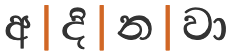
අදිනවා
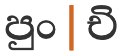
පුංචි
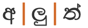
අලුත්
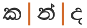
කන්ද
Larger typographic units
(Consonant Al_lakuna ZWJ)* Grapheme_cluster
Editorial operations that change the visual appearance of the text, such as letter-spacing, first-letter highlighting, in-word line-breaking, and justification, should never split conjunct forms apart. For this reason, an alternative way of segmenting graphemes is needed. This may not apply, however, for some other operations such as cursor movement or backwards delete.
Where conjuncts appear, a typographic unit contains multiple grapheme clusters. The non-final grapheme clusters all end with the sequence0DCA 200D, and the final grapheme cluster begins with a consonant.
The following are examples.
Click on the text version of these words to see more detail about the composition.
ඉංග්රීසි
චර්මය
Pre-modern orthographies may bring consonants in a cluster closer together, rather than creating a conjunct (see touchingconsonants). In this case, the trigger is a ZWJ followed by a virama.
Complicating factors
It can be difficult to know how to type a word that you see on a non-digital platform. For example, There are several words in Wiktionary that are rendered with a visible al-lakuna but that have both the al-lakuna and ZWJ in the underlying code. The latter is invisible, so cannot be detected from looking at the word on paper, and fonts don't produce a conjunct form, but the way the word is typed will affect the behaviour in the digital world by producing different segmentation, as shown just below, where the top spelling has the ZWJ and the bottom doesn't.
Click on the text version of these words to see more detail about the composition.
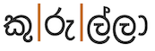
කුරුල්ලා
කුරුල්ලා
The differenece between just al-lakuna and al-lakuna with ZWJ can also affect vowel sign positioning. For the purposes of illustration, see fig_kro, where the word on the left is written with ZWJ to produce a conjunct, whereas on the right there is no conjunct. Otherwise the characters are the same. Observe the placement of the pre-base vowel. In the syllable kro on the left, the vowel sign surrounds the whole conjunct. In the middle we drop the ZWJ to give -k.ro, and now the pre-base glyph precedes the RA. The same should happen if the code points indicate a conjunct but the font doesn't have the necessary glyphs.
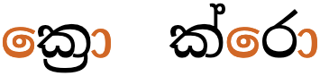
Placement of pre-base vowel glyphs.
Browser behaviour
Test in your browser.Left to right, the following words contain 2 conjunct sequences with virama+ZWJ, one that displays as a conjunct, another that doesn't, and two sequences with virama but no ZWJ. First, the text is displayed in a contenteditable paragraph, then in a textarea. Results are reported for Gecko (Firefox), Blink (Chrome), and WebKit (Safari) on a Mac.
ක්රොක්සොක්රො කන්ද
Cursor movement.Move the cursor through the text.
Gecko steps through the whole text using grapheme clusters. The cursor visually stops in the middle of the virama+ZWJ sequences. Blink steps through the virama+ZWJ sequences using grapheme clusters, however the cursor appears to skip to the end of the whole sequence and you have to hit the cursor key again (with no apparent movement) to actually clear it. Blink treats the sequences with just a virama as a single unit. WebKit skips all sequences with a virama (whether or not there is a ZWJ) as a single unit.
Selection.Place the cursor next to a character and hold down shift while pressing an arrow key.
The behaviour is the same as for cursor movement. This has the effect of sometimes appearing to highlight backwards in Blink.
Deletion. Forward deletion works in the same way as cursor movement. The backspace key deletes code point by code point, except that WebKit deletes both the virama and the ZWJ at the same time.
Line-break.See this test. The CSS sets the value of the line-break property to anywhere. Change the size of the box to slowly move the line break point.
Gecko wraps at grapheme cluster boundaries except that it wraps a sequence with virama+ZWJ as a single unit. Blink and WebKit wrap everything at grapheme cluster boundaries, which has the effect of breaking a conjunct in half at the end of a line.
Punctuation & inline features
Phrase & section boundaries
,␣:␣;␣.␣?␣!␣෴
Sinhala uses western punctuation.
phrase
,
;
:
sentence
.
?
!
The punctuation character ෴ once functioned to indicate the end of a paragraph, but is not used for modern Sinhala content.
Bracketed text
(␣)
Sinhala commonly uses ASCII parentheses to insert parenthetical information into text.
start
end
standard
(
)
Quotations & citations
‘␣’␣“␣”
Sinhala texts use quotation marks around quotations. Of course, due to keyboard design, quotations may also be surrounded by ASCII double and single quote marks.
start
end
initial
“
”
nested
‘
’
Single quotation marks are used for quotations within quotations.
Line & paragraph layout
Line breaking & hyphenation
Sinhala is normally wrapped where spaces mark word boundaries.
Line-edge rules
As in almost all writing systems, certain punctuation characters should not appear at the end or the start of a line. The Unicode line-break properties help applications decide whether a character should appear at the start or end of a line.
The following list gives examples of typical behaviours for characters used in modern Sinhala. Context may affect the behaviour of some of these and other characters.
Click on the Sinhala characters to show what they are.
“ ‘ ( should not be the last character on a line
” ’ ) ? ! % should not begin a new line
Baselines, line height, etc.
Sinhala uses the so-called 'alphabetic' baseline, which is the same as for Latin and many other scripts.
Diacritics appear above and below Sinhala letters, and consonant clusters are stacked. However, these remain reasonably close to the letters, and in fact, tall letters may be reshaped to avoid large extensions.
To give an approximate idea, fig_baselines compares Latin and Sinhala glyphs from Noto fonts. The basic height of Sinhala letters is typically around (just marginally higher than) the Latin x-height, however combining marks reach a little beyond the Latin ascenders, creating a need for slightly larger line spacing.
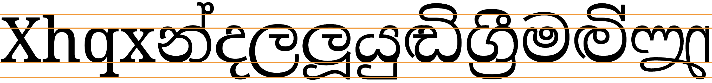
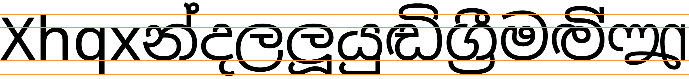
Font metrics for Latin text compared with Sinhala glyphs in the Noto Serif Thai (top) and Noto Sans Thai (bottom) fonts.
fig_baselines_other shows similar comparisons for the Iskoola Pota and Sinhala MN fonts.
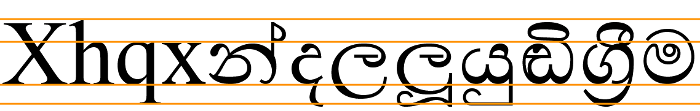
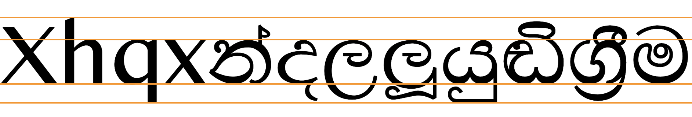
Latin font metrics compared with Sinhala glyphs in the Iskoola Pota (top) and Sinhala MN (bottom) fonts.
Page & book layout
Input
The Sinhala keyboards has deadkeys which change the assignments of keys around them when pressed. For example, pressing the key for e will change several keys to letters that start with the same symbol.
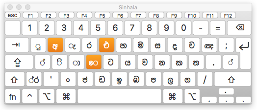
Sinhala keyboard in default state.
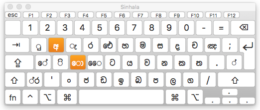
Sinhala keyboard after the key for e is pressed.
Note also, in the bottom left corner, that the keyboard has a key for the combination of 0DCA 200D 0DBB, ie. the conjoined -r. The shifted layout has a similar key for -y.
There is a rephaya key (for the sequence 0DBB 0DCA 200D), but it is typed after the consonant that normally follows it in memory. The input method then has to rearrange the codepoints in canonical order.
Effectively, you type characters or parts of multipart characters in visual order, and the system then has to rearrange things to produce the expected codepoint order.